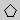
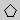

Puts JChemapint in the draw mode, which is the standard mode in which build up chemical structures. If selected you can click on a point on the document and you'll create a single atom at this point. If you click, hold and drag the mouse, a bond is created. Multiple clicking on an existing bond will cycle its bond order between the values 1, 2 and 3.
The algorithms behind this button are provided by the controller.Controller2D class.
This mode enables you to change an existing bond into a filled wedge - the standard stereo bond desribing that the atom at the thick end is above the 2D plane in which your are supposed to imagine the atom at the thin end. Further, if selected, multiple clicking on an existing bond will change it to a filled wedge and if it already has this shape it will toggle between the two possible orientations
.The algorithms behind this button are provided by the controller.Controller2D class.

This mode enables you to change an existing bond into a dashed wedge - the standard stereo bond describing that the atom at the thin end is below the 2D plane in which your are supposed to imagine the atom at the thick end. Further, if selected, multiple clicking on an existing bond will change it to a dashed wedge and if it already has this shape it will toggle between the two possible orientations.
The algorithms behind this button are provided by the controller.Controller2D class.The ring templates, like,  ,
,
,
,  ,
allow you to draw single
rings and complex ringsystems from a few predefined templates.
,
allow you to draw single
rings and complex ringsystems from a few predefined templates.
A click on an atom places the preselected ring such that the atoms on which you clicked is one of the ring atoms. Click on a bond and it will be part of the newly created ring. A new ring is always placed on the least hindered side of the system. If you don't like the result, you can click on a bond, hold the mouse button and use the appearing gray line to indicate side of the bond on which you want to have the ring placed. Atoms of the newly place ring that are within the snap radius of existing atoms will be fused with these.
The algorithms behind this button are provided by the controller.Controller2D class.